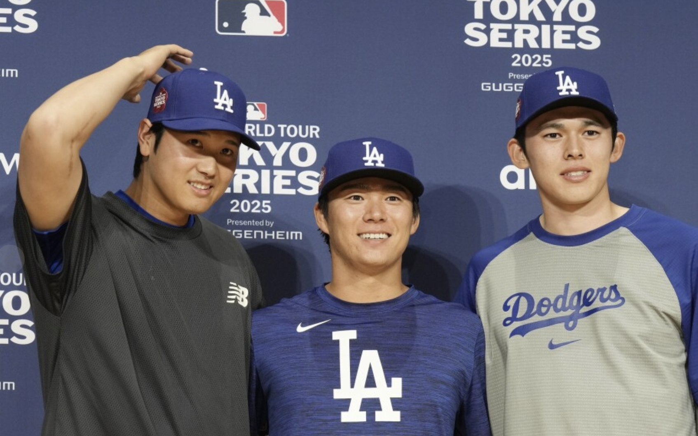

About MLB & its global reach
Major League Baseball is more than just a cornerstone of American culture—it’s a global phenomenon that continues to captivate fans around the world. With 30 teams divided into the American League (AL) and National League (NL), the league operates through a grueling 162-game regular season, culminating in the thrilling postseason and the iconic World Series. While the majority of teams are based in the United States, with the exception of the Toronto Blue Jays in Canada, MLB’s influence has always extended far beyond North America. Historically, games have been played primarily in the U.S., but in recent years, the league has taken significant steps to expand its global footprint, and that shift is reshaping the game’s future.
One of MLB’s greatest strengths is its ability to bring together talent from all corners of the globe. The league is home to international superstars like Japan’s Shohei Ohtani, a two-way phenom who has redefined what’s possible in baseball, and Venezuela’s Ronald Acuña Jr., whose electrifying play has made him one of the most exciting players to watch. Events like the World Baseball Classic further highlight the sport’s international appeal, showcasing the best players from around the world competing for their countries and bringing a new level of excitement to the game.
This year, I’m particularly excited for the new Tokyo Series, which will feature Ohtani’s team, the Los Angeles Dodgers, taking on the Chicago Cubs, with their own Japanese star in Seiya Suzuki. This series is an example of MLB’s commitment to growing the game globally. By bringing the excitement of Major League Baseball directly to fans in Japan, the league is not only expanding its audience but also strengthening its connection to one of the most passionate baseball-loving nations in the world. It’s a chance for Japanese fans to experience the unique energy of MLB games firsthand, while also celebrating the incredible contributions of Japanese players to the league.